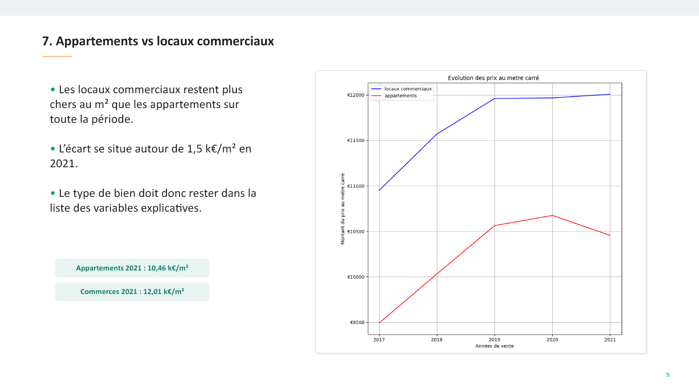

La classification distingue les deux catégories sur l’échantillon mesuré.Classification separates the two categories on the measured sample.
Projet 03 · Étude de cas complèteProject 03 · Full case study
Valoriser 275 actifs avec une erreur mesurée.Value 275 assets with measured error.
J’ai analysé le marché parisien, construit une estimation reproductible du portefeuille et classé des biens tout en maintenant une frontière claire entre prédiction statistique et expertise immobilière.I analyzed the Paris market, built a reproducible portfolio valuation and classified properties while keeping a clear boundary between statistical prediction and property appraisal.
- RôleRole
- Analyse & MLAnalysis & ML
- HistoriqueHistory
- 2017–2021
- CibleTarget
- 31/12/2022
- ZoneArea
- Paris
01 · Contexte01 · Context
Estimer aujourd’hui à partir de transactions passées.Estimate today using past transactions.
L’objectif était d’estimer au 31 décembre 2022 la valeur d’un portefeuille parisien à partir de transactions enregistrées entre 2017 et 2021, puis d’automatiser la distinction entre appartements et locaux commerciaux.The goal was to estimate a Paris portfolio as of December 31, 2022, using transactions recorded from 2017 to 2021, then automate the distinction between apartments and commercial premises.
26 196transactionstransactions
275actifs à valoriserassets to value
20arrondissementsdistricts
2types de biensproperty types
02 · Défi02 · Challenge
Respecter le temps, la géographie et l’incertitude.Respect time, location and uncertainty.
Le prix au mètre carré évolue dans le temps, diffère fortement selon l’arrondissement et ne se comporte pas de la même façon pour un appartement et un local commercial. Un découpage aléatoire aurait aussi risqué de mélanger passé et futur.Price per square meter evolves over time, differs sharply by district and does not behave the same way for apartments and commercial premises. A random split could also have mixed past and future.
Choix de validationValidation choice
Utiliser une séparation chronologique 67 % / 33 % pour mesurer le modèle sur une période postérieure à celle d’apprentissage.Use a 67% / 33% chronological split to evaluate the model on a period later than its training data.
03 · Démarche03 · Approach
Comprendre le marché avant d’entraîner le modèle.Understand the market before training the model.
- Contrôler les donnéesCheck the dataTypes, valeurs manquantes, surfaces, prix et cohérence des catégories.Types, missing values, areas, prices and category consistency.
- Explorer les tendancesExplore trendsÉvolution temporelle, écarts géographiques et différences entre types de biens.Time evolution, geographic gaps and differences across property types.
- Construire la régressionBuild the regressionModèle explicable, variables préparées et test sur une période tenue à l’écart.Explainable model, prepared variables and testing on a held-out later period.
- Valoriser le portefeuilleValue the portfolioApplication homogène du modèle aux 275 actifs avec résultats par segment.Consistent model application to 275 assets with segment-level results.
- Classer les biensClassify propertiesPrédiction appartement/local commercial et mesure des erreurs de classement.Apartment/commercial-premises prediction and measurement of classification errors.
04 · Résultats04 · Outcomes
Une estimation lisible, accompagnée de son niveau d’erreur.A readable estimate paired with its error level.
10,8 %erreur moyenneaverage error
≈ 53,2 k€MAE
79,16 M€valorisation segment 1segment 1 valuation
103,87 M€valorisation segment 2segment 2 valuation
L’arrondissement crée un écart structurel qui doit rester visible dans l’interprétation.District creates a structural gap that must remain visible in interpretation.
05 · Preuves05 · Evidence
Deux variables structurantes : lieu et type.Two structural variables: location and type.


06 · Limites et compétences06 · Limits and skills
Un outil d’aide à la décision, pas une expertise notariale.A decision aid, not a professional appraisal.
- Les transactions s’arrêtent en 2021 alors que la cible est fin 2022 : le changement de marché reste un risque.Transactions end in 2021 while the target is late 2022; market change remains a risk.
- La MAE moyenne masque des erreurs plus fortes sur certains actifs.Average MAE hides larger errors on some assets.
- Deux catégories ne couvrent pas toute la diversité immobilière.Two categories do not cover the full diversity of real estate.
- La valeur finale doit être confrontée à l’état, l’emplacement précis et l’expertise humaine.Final value must be challenged against condition, precise location and human expertise.
Validation chronologique, métriques d’erreur et interprétation prudente.Chronological validation, error metrics and careful interpretation.
Traduction d’une prédiction en fourchette de décision bornée.Translation of a prediction into a bounded decision estimate.